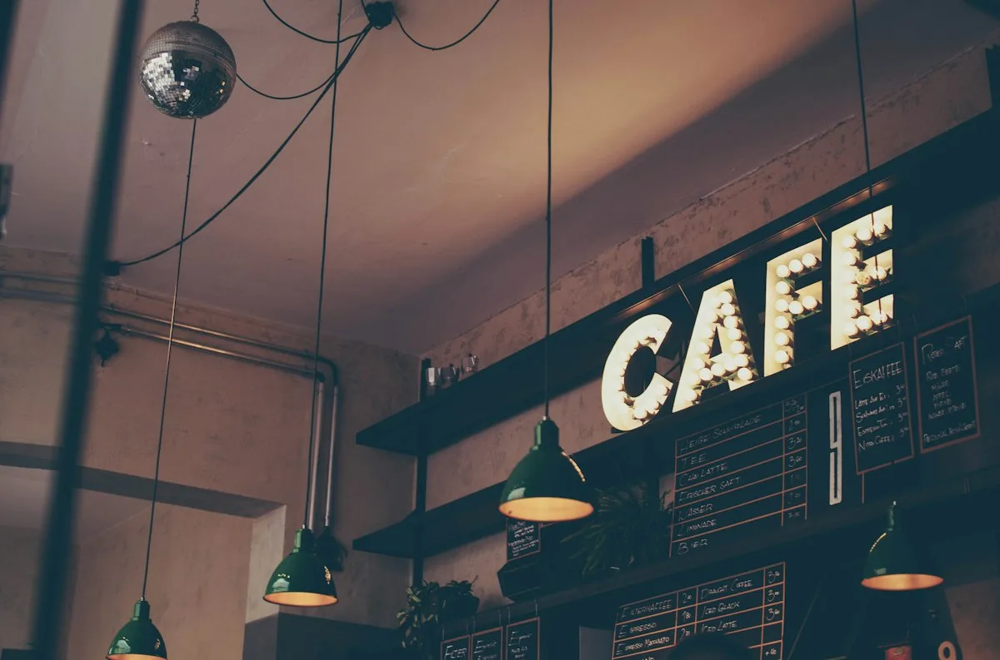

همراهِ لحظههای کار و زندگی
از راهاندازی تا میزبانی،
همراه شما هستیم
فیلکس، همراه شرکتها، صاحبان کافه و برگزارکنندگان رویدادها در طراحی، راهاندازی و ارائهٔ خدمات حرفهای کافه و پذیرایی است.
از یک ایدهٔ تازه تا تجربهای خوشایند، در کنار شما.

خدمات ما
سه مسیر، یک همراه
هر پروژه نیاز خودش را دارد.
مسیر مناسب شما از اینجا شروع میشود.
چرا فیلکس؟
یک مسیر هماهنگ، از ایده تا اجرا
برای یک تجربهٔ خوب، همهٔ جزئیات باید کنار هم درست کار کنند.
تجربهٔ فیلکس
همراهی در فضای کار
تجربهای از راهاندازی تا بهرهبرداری
بخشی از تجربهٔ فیلکس، راهاندازی و بهرهبرداری کافه در دیجیپی است؛ تجربهای در ارائهٔ خدمات کافه در محیط سازمانی.
دربارهٔ نیاز مجموعهٔ شما گفتوگو کنیممسیر همکاری
از یک گفتوگو شروع میکنیم
قدمبهقدم، تا شکلگرفتن همکاری متناسب با نیاز شما.
پرسشهای متداول
پیش از شروع
بیشتر بدانید
چند پاسخ کوتاه برای روشنتر شدن مسیر همکاری.
گفتوگو دربارهٔ نیاز شماشروع یک همراهی
برای ایدهٔ شما،
وقت گفتوگوست.
به کافهٔ مجموعهٔ خود فکر میکنید، در مسیر راهاندازی کافه هستید یا رویدادی پیش رو دارید؟ از نیازتان برای ما بنویسید.